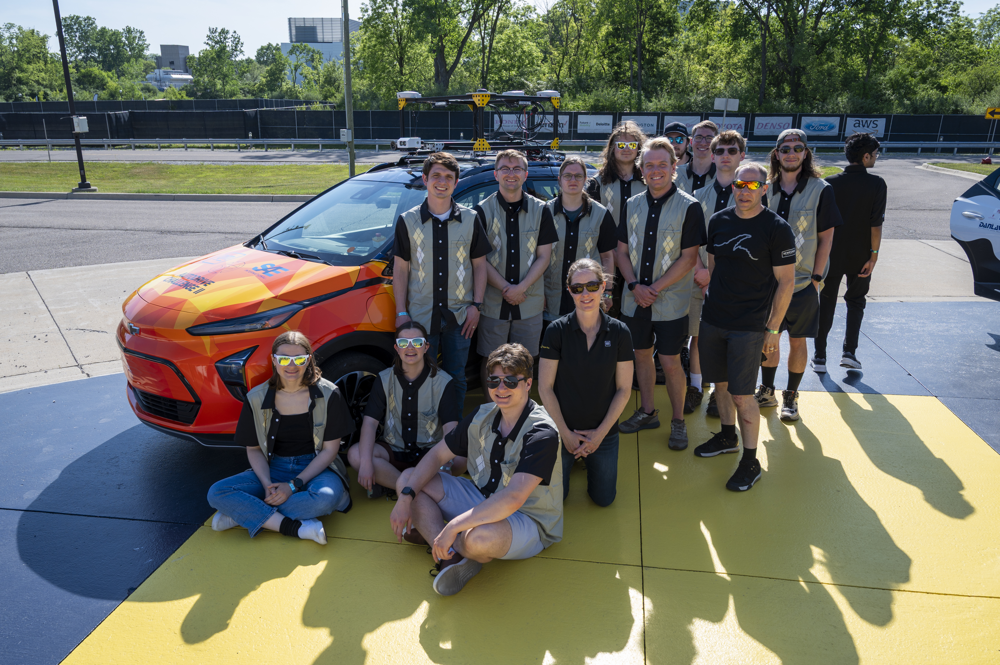
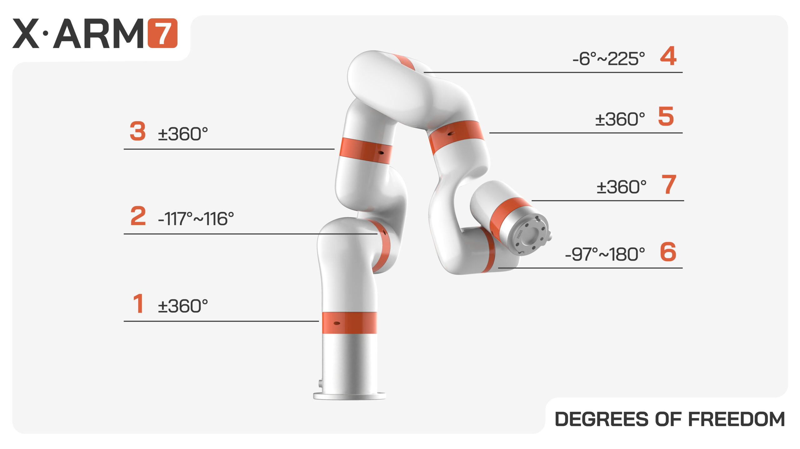

Robotic Systems
Enterprise
an industry-driven enterprise that focuses on solving real-world industrial and engineering problems for our sponsors. Our goal is for members to gain industry knowledge, interdisciplinary teamwork, and communication skills. From developing sensor systems for an autonomous vehicle to designing field research robots that navigate the Tech Trails, RSE projects span a wide variety of interests.


The Robotics Systems Enterprise at Michigan Tech a large part of why I chose Michigan Tech as a high school student touring colleges, the enterprise program as a whole was largely appealing due to it's project-based approach that extended the concept of senior design to something much more appealing. RSE only expounded upon that, the idea of working on an autonomous vehicle boggled my brain.
Auto Drive II Challenge

UFactory 7 Degree of Freedom Robot Arm
